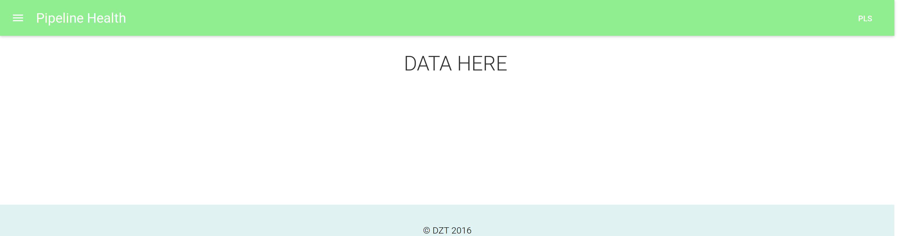

Pipestat V2
by John Hossler
Background
CI Product Test Pipeline on Jenkins Open Source
- Each test ran on individual job
- No good way to keep track of individual test cases
- Pipestat!
Today's Problem
CI Product Test Pipeline is on Cloud Bees Jenkins Enterprise
- All tests are part of a stage of the entire build process!
- Pipestat can't gather the data anymore
- Other pipelines want some general statistics aggregated
Goals
- Gather last completed build status, last green build time, and last red build time
- Present this information in an easily accessible way
Completed
- Gather last completed build status, last green build time, and last red build time
Present this information in an easily accessible way

- Python jenkinsapi is very slow
- Tests all in one job, so aggregation of data is done
- Needs investigation